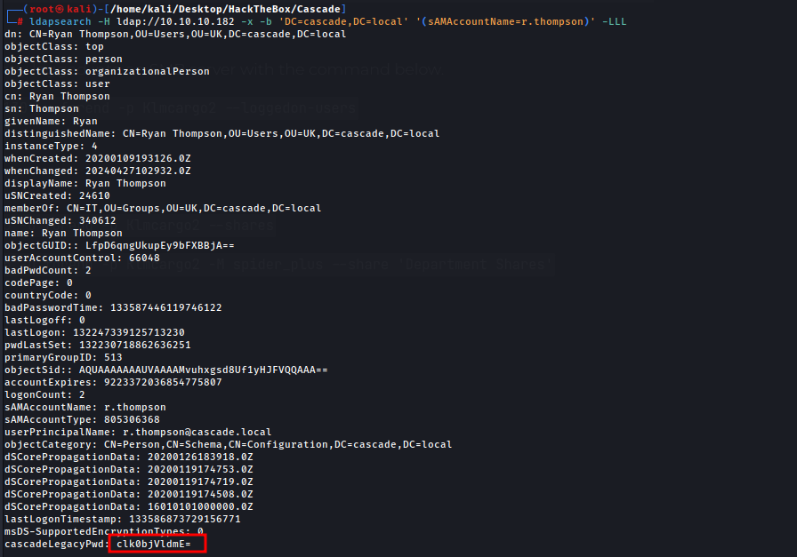
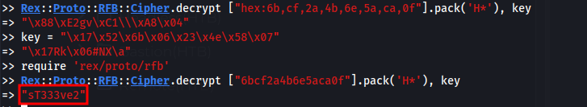
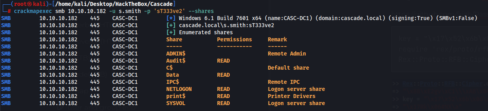
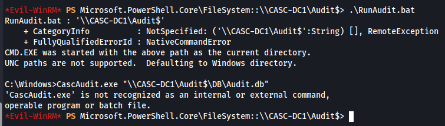
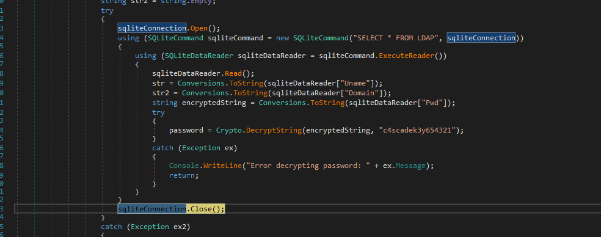
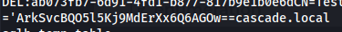
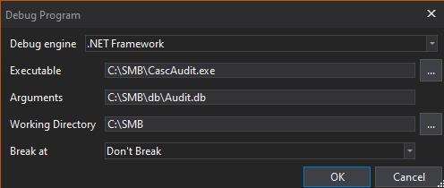
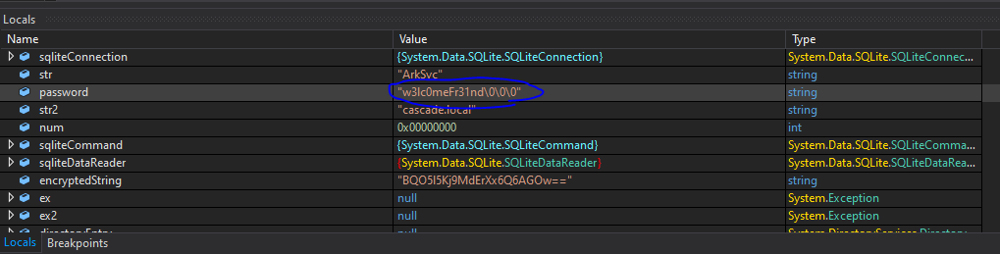
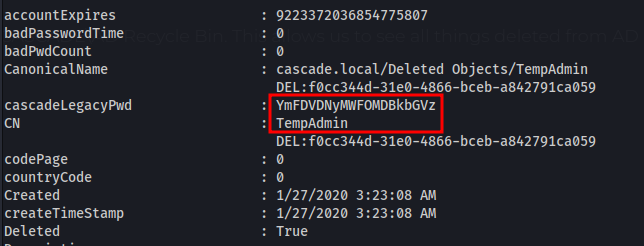
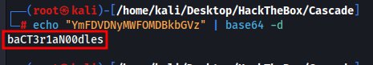

HTB: Cascade
Users found with RPC Client
CascGuest
arksvc
s.smith
r.thompson
util - has 1 logon
j.wakefield
s.hickson
j.goodhand
a.turnbull
e.crowe
b.hanson
d.burman
BackupSvc
j.allen
i.croft
I did a ton of enumeration but found nothing interesting at all which was really annoying. When you query a user with ldap search you find nothing interesting at all. If you were to query r.thompson you would see an extra field containing the legacy password. Which is really annoying because every other user doesnt have this field so you would have to query all users manually and read all the output for every single user.
ldapsearch -H ldap://10.10.10.182 -x -b 'DC=cascade,DC=local' '(sAMAccountName=r.thompson)' -LLL

clk0bjVldmE=
base64 decoded is rY4n5eva
r.thompson:rY4n5eva
Connecting to the SMB server and navigating to IT and s.smith folder we find a VNC reg key that has an encrypted password.
encrypted pass - hex:6b,cf,2a,4b,6e,5a,ca,0f
Using this script found on github we can decode the password
https://github.com/frizb/PasswordDecrypts
key = "\x17\x52\x6b\x06\x23\x4e\x58\x07"
require 'rex/proto/rfb'
Rex::Proto::RFB::Cipher.decrypt ["6bcf2a4b6e5aca0f"].pack('H*'), key

We can now remote in
evil-winrm -i 10.10.10.182 -u s.smith -p sT333ve2
We have another user, Arksvc we probably need to compromise their account to move to admin.
I used a hint on this part as I couldnt find anything. There is a share we can access with sql lite and some exe files.
\\CASC-DC1\Audit$
If we try to start the db with the batch script(RunAudit.bat) we get an error with CascAudit.exe

So we download the entire SMB directory to our machine and move it to a windows VM for analyzing it.
On the windows machine we install DnSpy and we can look at what its doing.

Here we can see how the string is encrypted/decrypted. We can add a breakpoint on line 53 to have it decrypt our audit.db file which has the encrypted password of arksvc which I found by running strings on the audit.db file.

In DnSpy we setup an argument to add the audit db file and this will run at the breakpoint above.

If it runs successfully we get the decrypted password

I did have to use 0xdfs guide for this entire part but I did it as it helped me learn how to do this. I also had to do my own troubleshooting to get it working.
arksvc:w3lc0meFr31nd
now we can remote in as arksvc
evil-winrm -i 10.10.10.182 -u arksvc -p w3lc0meFr31nd
Priv esc to Admin
Looking a new groups our user has one that stands out was CASCADE\AD Recycle Bin. This allows us to see all things deleted from AD.
I googled how to use this and we can view it with this powershell command
Get-ADObject -filter 'isDeleted -eq $true' -includeDeletedObjects -Properties *
I noticed a temp admin user which was deleted with a legacy pwd that was different from s.smiths password

Just like the last one its base64 and gives us the admin password

We can remote in as admin now
evil-winrm -i 10.10.10.182 -u Administrator -p baCT3r1aN00dles